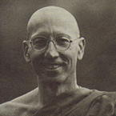

|
HAPPINESS  |
Venerable Jagaro (John Cianciosi) was born in Southern Italy in 1948.
When he was 10 years old his family emigrated to Australia. He studied
chemistry at the Melbourne Institute of Technology, but later, while
working as a research chemist, he felt the need to broaden his horizons.
So, like many young Australians, he set off travelling -- through Bali,
Indonesia and Malaysia, and ending up in Thailand, where he encountered
Buddhism. He decided to become a monk and received bhikkhu ordination,
aged 24, under Venerable Phra Khru Nanasirivatana, at Wat Pleng Vipassana,
in 1972. |
|
The following teaching by Venerable Jagaro is adapted from a Friday
night Dhamma talk HAPPINESS IS SOMETHING CLOSE TO THE HEART of everybody. We all want to be happy. Happiness in the normal sense means that you always get what you want, when and how you want it. This is very difficult, because so many things are beyond our control: the weather, one's appearance, health, relationships, one's meditation so many things we cannot control. One's striving for worldly happiness seems constantly hindered. Where is this happiness? How can we possibly be happy when everything is in this state of uncertainty and constant change? We may spend all our lives seeking it and finding disappointment. If you are a fortunate person with good conditioning and positive states of mind, you may be happy most of the time. However , there is always the opposite when things are not as you want them to be, when the mind doesn't do what you want it to do, when people are not as you want them to be and naturally the opposite emotions and feelings which we call unhappiness will arise. Unhappiness has to be there so long as there is happiness. It is like Nasrudin, the wise man who acted like a fool; or maybe he was a fool who acted like a wise man. He was sitting with this big bag of little red chillies very hot! Tears were streaming down his face and he was panting and crying and eating chillies. An old friend came by and asked, 'Nasrudin, what are you doing there eating all those really hot chillies?' Nasrudin, between gasps for air and wiping away his tears and blowing his nose, managed to say, 'I'm looking for the sweet one.' And so we continually look for the sweet one, continually seek happiness in the conditioned, and we haven't found a sweet one yet. Even when you are getting what you want maybe you can be 90% happy, but still there is that at the back of the mind that is a little bit concerned, a little bit afraid, a little bit possessive. Underneath you know it can't last! That nagging fear leads us to a spiritual path, to seek an alternative source of happiness. In Buddhism we are striving for a different sort of happiness. Do you think there can be happiness and joy in the mind which is self-contained, independent of all conditions and perceptions, completely independent of anything whatsoever? This is the happiness of the Buddha. This is Nibbana, the happiness of Enlightenment and non-attachment, the happiness of no limitations, the happiness of no self. When you stop having an invested interest in conditions and results, you are not burdened by anything. When you are not burdened the mind is at peace. It is naturally joyful and happy. The Buddha was a shining example of this happiness. From my own experiences of having met many great meditation Masters, they share this quality of inner tranquillity, despite the inability to control conditions and events. When I went to live with Ajahn Chah, at first I was amazed, and then I was quite upset, to see how he ran his monastery. I expected him to have a really tight control over everything: keep the monks in line, keep the lay people out of the way, have a regular timetable. Ajahn Chah didn't do anything like that at all. Things would continually change in the monastery: sometimes we would meditate in the morning; sometimes we would chant; then for a month or so we would do a lot of formal practice; then we would work continually flowing with the conditions. I began to realise that Ajahn Chah didn't go out of his way to control and regulate conditions. Everybody wanted him to have a timetable, but he just never kept to it. He would just sit there, and if people came he received them; he never turned them away . If they didn't come, then he was perfectly happy to be alone. He didn't bother to control events, yet if I have ever met a joyful happy person, it was Venerable Ajahn Chah. It wasn't that he was always laughing although he did laugh a lot but he just had this joy about him, whatever he was doing. He wasn't seeking anything from anybody , wasn't trying to control things in order to be happy . In Buddhism we are interested in freedom the freedom of non-attachment. W e carry around an immense burden of attachment to everything we consider 'me' and 'mine' , like a big heavy stone on our shoulders. When a wise person points out to us that we could throw off this burden, we regard them with suspicion. 'Throw it off? Then I wouldn't have anything left! I couldn't do that!' Thinking they will bring us happiness, we continue to lug around our personal investments and self interests this great big heavy burden! The Buddha taught that nothing is worth attaching to. Do not attach to anything: that will bring true peace and happiness. Reflect on the process of what we call suffering: what it really is how it arises. Only then can one begin to appreciate what attachment really is, what the result of attachment is, and begin to glimpse the idea and the possible results of non-attachment. Attachment is something we create in the mind. When we let it go, we begin to experience the silent empty mind. This still, peaceful mind can be found when sitting in meditation. Is it possible to bring it also into our daily lives? Can we live as ordinary people with this non-attachment? There is one vital factor needed if we wish to live skilfully, and that factor is mindful awareness. This factor of knowing, of being present, is essential if we wish to go beyond our continual stream of thinking, projecting, analysing and reacting. It is difficult, isn't it? Without awareness, we are locked into our stale conditioning, like a monkey with its paw stuck in the biscuit jar . All it has to do to become free is let go, but this is just what it won't do. Actually , non-attachment is not something you have to do: all you have to do is stop attaching. This is natural for the enlightened mind, and it is awareness which makes this a real possibility in our lives. The Buddha taught a Path, gave us a method of skilful means. Meditation is the tool to help us with the process of being present, of seeing attachment and tensions arising, of knowing when to relax and let go. The practice of meditation is very highly emphasised. The more you become aware, the more you can begin to experience true peace and happiness. There is no need to have anything else, no need to achieve anything. Through Enlightenment, you gain nothing at all: all you do is get rid of the extras; you just put down your burden. Life is still life, there are still relationships, and there is still action. The big difference is that you are perfectly at peace, and there is a real and lasting happiness. So we should all make an effort with our practice. Without meditation, life is very difficult, and progress on the spiritual path is very hard. I once knew a German who even at that time had been a monk for fifteen years, and I asked him, 'Do you still meditate?' and he said, 'Yes, I meditate regularly . I don't think it is possible to lead a spiritual life without meditation.' I have always remembered that, and I have always reflected on how true it is. Without the ability to calm the mind, without the ability to clear the mind, without the ability to sustain awareness and reflect and observe the nature of the mind and body , it is not possible to develop in the spiritual direction the ultimate direction which enables us to let go, to stop seeking happiness from anything or anybody. |
| Home Page |